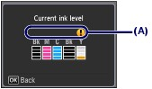
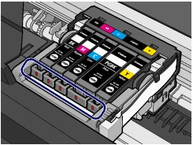

Checking the Ink Status
Checking the Ink StatusYou can check the ink status on the LCD or with the ink lamps.
 With the LCD on the Machine
With the LCD on the Machine(1) Make sure that the power is turned on, and press the Setup button.
(2) Select Display remaining ink level , and press the OK button.
A symbol appears in the area (A) if there is any information about the remaining ink level.

Example:
Ink tank is running low. Prepare a new ink tank.
 Note Note
|
With the Ink Lamps(1) Make sure that the power is turned on, and open the Paper Output Tray gently.
(2) Lift the Scanning Unit (Cover), then hold it open with the Scanning Unit Support.
See step 2 in Replacing Procedure.
(3) Check the ink lamps.
Close the Scanning Unit (Cover) after confirming the ink lamp status.
See step 6 in Replacing Procedure.

 Ink lamp is on
Ink lamp is on
The ink tank is correctly installed.
Ink lamp is flashing
Flashing slowly (at around 3-second intervals)
...... Repeats
Ink tank is running low. Prepare a new ink tank.
Flashing fast (at around 1-second intervals)
...... Repeats
- The ink tank is installed in the wrong position.
Or
- The ink has run out.
Make sure that the ink tank is installed in the correct position as indicated by the label on the Print Head Holder. If the position is correct but the lamp flashes, there has been an error and the machine cannot print. Check the error message displayed on the LCD.
Refer to "Troubleshooting" in the on-screen manual: Advanced Guide.
Ink lamp is off
The ink tank is not installed properly or the function for detecting the remaining ink level is disabled. If the ink tank is not installed properly, press the mark (Push) on the ink tank until the ink tank clicks into place. If it does not click into place, make sure that the orange protective cap has been removed from the bottom of the ink tank.
If the ink lamp is still off after reinstalling the ink tank, there has been an error and the machine cannot print. Check the error message displayed on the LCD.
Refer to "Troubleshooting" in the on-screen manual: Advanced Guide.